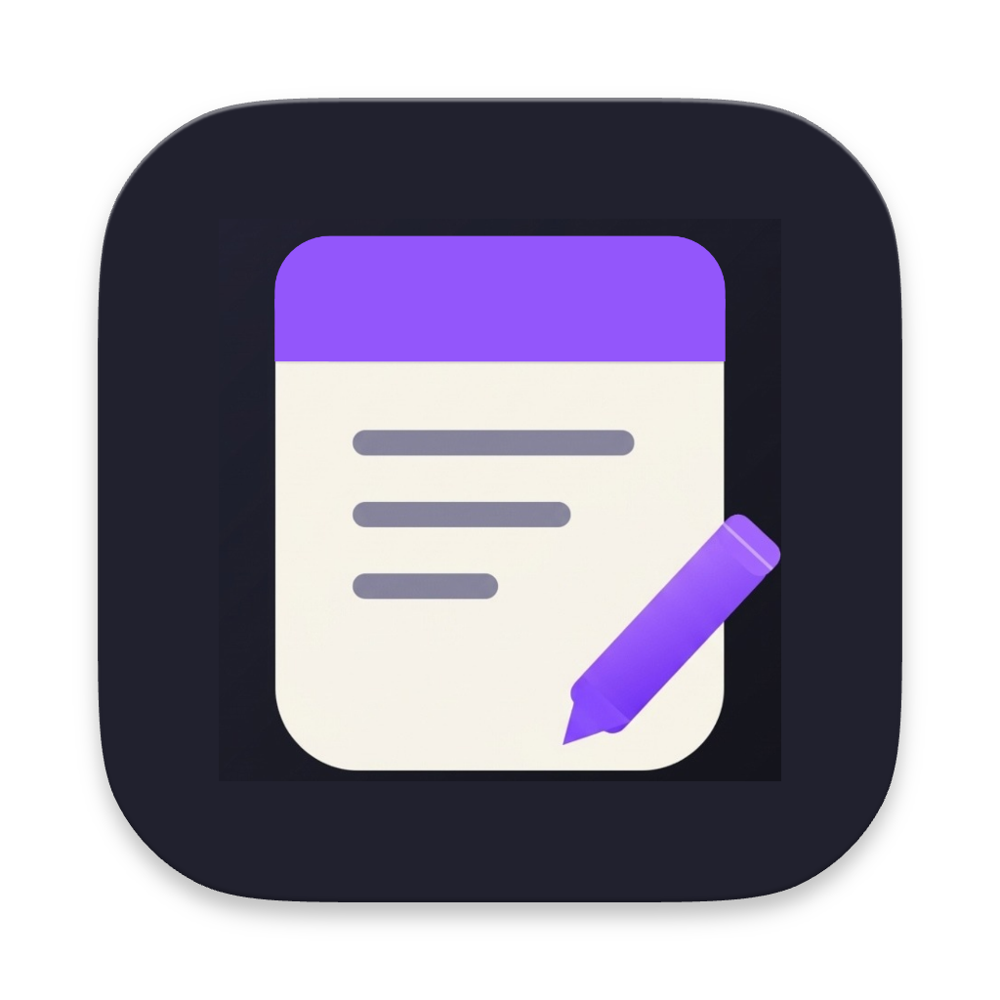

A note from anywhere
⌥Q opens a floating note above your apps, even in full-screen Spaces.

quicknote DownloadA SMALL NOTE, A SHORTCUT AWAY
Capture a thought with ⌥Q. Open Notepad when you need room.
Catch a thought. Keep moving.
A note, right when you need it.
Press ⌥Q for a floating quicknote or ⇧⌥Q for room to think.
Quicknote stays in the menu bar. Your notes save on your Mac and stay separate.
Small notes. Clear head.
Write down the next idea, keep your place, and get back to what you were doing.
Good ideas don't wait.
Capture a thought in one tap.
Open quicknote with ⌥Q, write it down, and keep moving.
MADE TO STAY OUT OF THE WAY
⌥Q opens a floating note above your apps, even in full-screen Spaces.
⇧⌥Q opens the full Notepad. Its toolbar button toggles quicknote.
Your notes save separately on your Mac. No account or cloud sync.
READY WHEN YOU ARE
Quicknote stays in the menu bar, so your shortcuts are ready even when the windows are closed.
GET STARTED
For macOS 13 or later. Notes stay on your Mac.
Download v1.7 From GitHub Releases ↗The app is ad-hoc signed and not notarized by Apple. If macOS blocks the first launch, review the notice in System Settings → Privacy & Security.